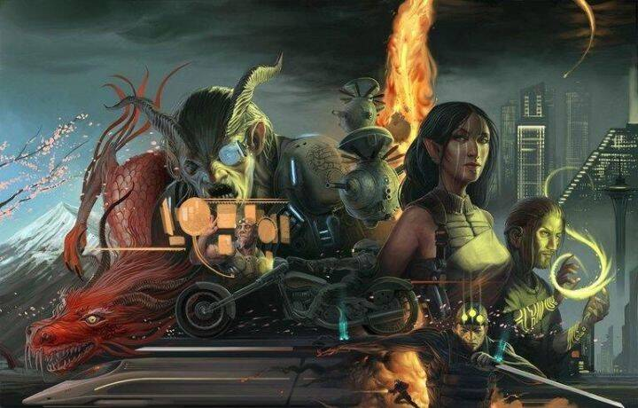

赛博朋克的流派主要可以追溯到两位作家，他们的想象力和世界构建是导致文学、电影和游戏有趣而引人入胜的流派的火花。
第一个是菲利普·K·迪克（Philip K. Dick）。
1962 年，菲利普·K·迪克写了*《Do Androids Dream of Electric Sheep?》，*这部作品更为人所知的是《银翼杀手》，在1982年改编成电影，由哈里森·福特（Harrison Ford）主演，更名为《银翼杀手》。在这部作品中，迪克写了一个反乌托邦的未来，在那里人工智能非常先进，机器人和人类之间几乎无法区分。主角德克是一名追捕叛徒机器人的警察。他不知道的是，他自己就是一个机器人。问问自己，你真的是你吗？你怎么知道的？
这件作品不仅因其未来主义的表现而有趣，而且还包含许多存在主义的主题。意识的定义是什么？成为人类意味着什么？什么是现实？鉴于迪克有精神病史，最终导致他于 1982 年去世，享年 53 岁，就在《*银翼杀手》*上映之前，他以明显的脆弱性探索了这些话题。
迪克的作品继续被改编成电影和电视。基于他的著作的一些著名作品是《Minority Report》,《The Man in the High Castle》,《A Scanner Darkly》,《Total Recall》, 和《The Adjustment Bureau》。
第二位作家是威廉·吉布森（William Gibson）
吉布森在 19 世纪 80 年代撰写了极具影响力的蔓延三部曲，其中包括《神经漫游者》、《零计数》和《蒙娜丽莎过载》。这三本书因创造了赛博朋克流派而广受赞誉，他创造了许多我们今天用来指代计算机和互联网的术语。最引人注目的是赛博空间。
吉布森的作品在本质上也是反乌托邦的，主题描述了全能的公司和不太可能存在的英雄。这些作品是黑色的，探索近未来的宇宙以及技术和控制论的影响。
他的作品也是从贫困人群的角度写的。这些角色可以看到他们的现实与广告中描绘的现实之间的巨大差异。对他们来说很明显，富人和穷人之间存在不可逾越的鸿沟。
这些角色被简化为在棺材旅馆睡觉，同时吃着我们认为几乎不能食用的食物，在那里他们以低廉的价格获得一个睡觉的地方，仅此而已。一些棺材旅馆比其他旅馆更私密，但都往往是充斥着毒品和卖淫的罪恶窝点。
在他们的斗争中，这些角色看到了摆脱困扰大多数人的苦难的出路。他们危险地把握这些机会，认为他们死了比在他们可怜的存在中跋涉要好。
《神经漫游者》计划改编成电影，现在只有在特效赶上吉布森的高度后才成为可能。
桌游一直是电子游戏的前身，赛博朋克也不例外。最著名的桌游是Shadowrun。

Shadowrun 主要从 Dick 和 Gibson 的作品中获取元素，但也从许多其他来源中获取灵感。
Shadowrun 设定在一个融合了魔法和科技的近未来宇宙中。与其他桌面角色扮演游戏一样，您可以随心所欲地制作故事。横行无忌权力过大的公司、腐败的政府以及技术与人类思想、身体和精神的融合是突出的主题，并影响着很多运动。
在玛雅历法结束的 2012 年，魔法能量被释放到世界上，将部分人类转变为超人类。这些超人类是精灵、兽人、巨魔、半人马，以及其他种族。
一些人类和超人类可以施展魔法，但这是一种罕见的礼物。那些不能施法的人类和超人类，可以购买安装在他们身体上的部件以增强能力。但是增强能力并不便宜，安装手术也不便宜。就像今天现金为王。但在 2055 年，它不是美元或欧元，而是 Nuyen。
那些选择不为公司工作的人在阴影中工作，并通过在本质上是雇佣兵组织的“Runs”中赚取他们的 Nuyen。典型的工作内容是暗杀、信息抽取、数据和财产盗窃、勒索和恐吓。但是runners需要持怀疑态度，因为有时赞助人并不是他们所说的那样。
如果你决定在阴影中奔跑，千万不要与龙做交易，也不要出故障。
鉴于媒体的局限性，赛博朋克类型的视频游戏改编的结果毁誉参半。一些早期的尝试是针对个人电脑的 Tron 街机游戏和 Syndicate。
然而，技术限制从未阻止人们尝试创建虚拟世界。赛博朋克 2077 是迄今为止展示迪克和吉布森想象中的世界的最佳尝试。
这些新的愿景让我们可以尽情发挥想象力，畅想未来，拥有自己的电子梦想。
我们正处于新现实的悬崖边上，模拟与数字、现实与虚拟将不可逆转地融合在一起。定义什么是人类和非人类的界线将变得模糊，以至于需要对生命产生新的理解。
以赛博朋克为主题的新环境，Gamestate是这一愿景的新体现，将无限的元宇宙和区块链互连成所谓的“超级宇宙”——一个大型多人在线聚会场所，供游戏玩家探索、play to earn和社交，以激励性逃避现实的终极形式！
不要被排除在外，见证历史实时发生！